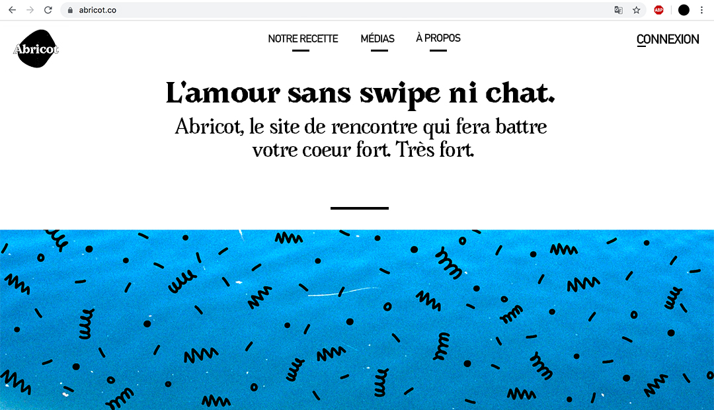
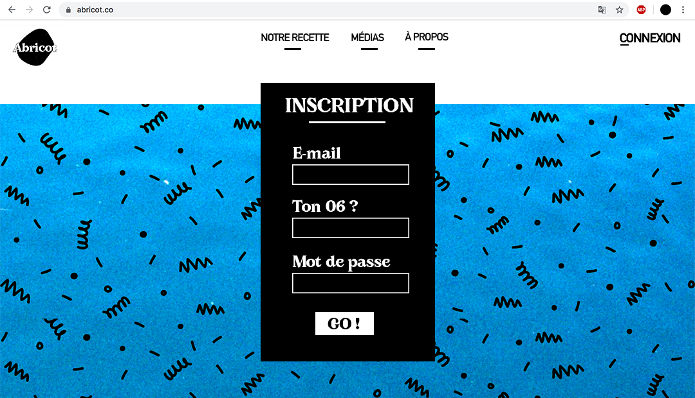

WEBDESIGN REDESIGN
As part of my DSAA, dating site Abricot’s team, has asked us to create a new identity for the website’s interface.
 I chose to highlight their slogan “ Love without swipe, neither chat.” which express their will to propose meetings that differ from others dating websites. I wanted to bring a romantic but contemporary universe, by using the “AVARA” typeface , which remind us of a classic aesthetic, thanks to the serif but which also tends to a modern spirit with its geometrical letters.
PROPOSITION DE LOGO
I used the actual logo which represents two apricots running into each other between two apricots, in order to propose an abstract adaptation of this encounter.
On this propositions, the meeting is made between the text and the form. The form reminds us in a less figurative way the apricot, and contrasts express the idea of difference, a notion that is also highlighted by Abricot.co.